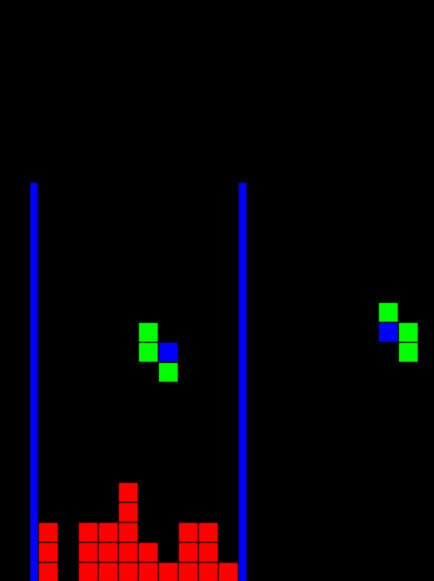

Мой проект: Tetris на C++ и C# MAUI
Тип проекта: Индивидуальный
Язык:C++, C#
Технологии: .NET MAUI, XAML, ООП
Цель: Полное воспроизведение и дальнейший перенос основных структур игры Тетрис, написанной на языке C++, в современную кроссплатформенную среду .NET MAUI с использованием языка C#
Ссылка на репозиторий проекта
Особенности проекта
- Начальный проект строго следует гайду на C++
- Было проведено дальнейшее усложнение и адаптация под C#
- В коде предусмотрены возможности для добавления новых функций и расширения логики
- В написанном мной техническом руководстве пояснён каждый шаг основных структур — комментарии, принципы
Что реализовано
- Реализована рабочая игра на C++
- Хранится игровое поле и проверяются коллизии
- Логика удаления линий и генерации новой фигуры.
- Устройство фигур (матрицы 5х5)
- Реализовано в MAUI C#
- Устроено отрисовывающее пространство (GraphicsView и IDrawable)
- Отслеживание координат: MAUI использует пиксели, C++ — логические блоки
- Ручная реализация с ICanvas и Drawable
- Графический вывод на мобильном экране;
- Добавлено отображение статистики: очки, линии, уровень;
Скриншоты
